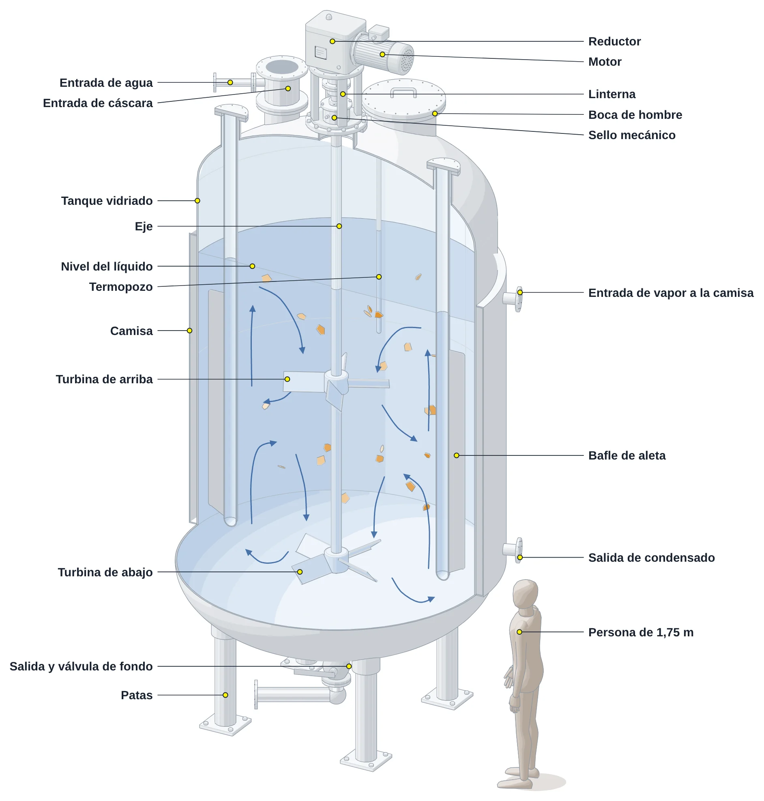
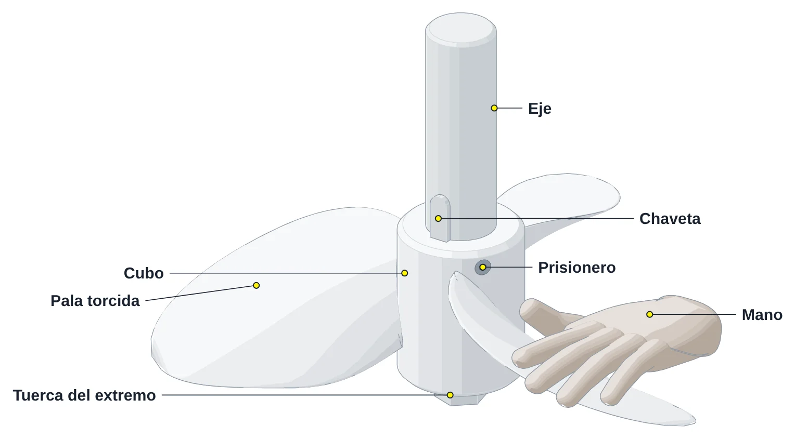
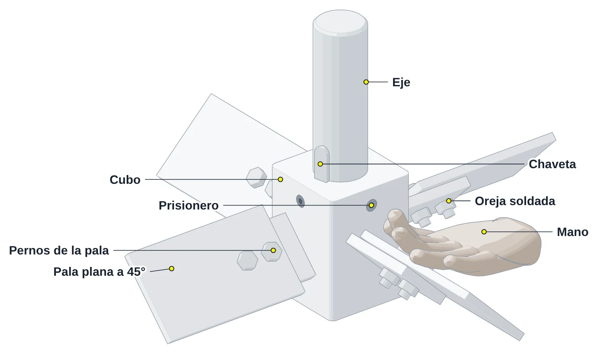
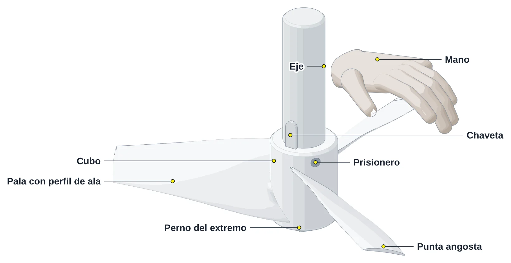
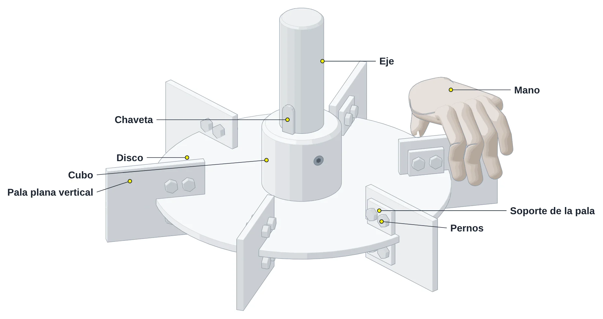
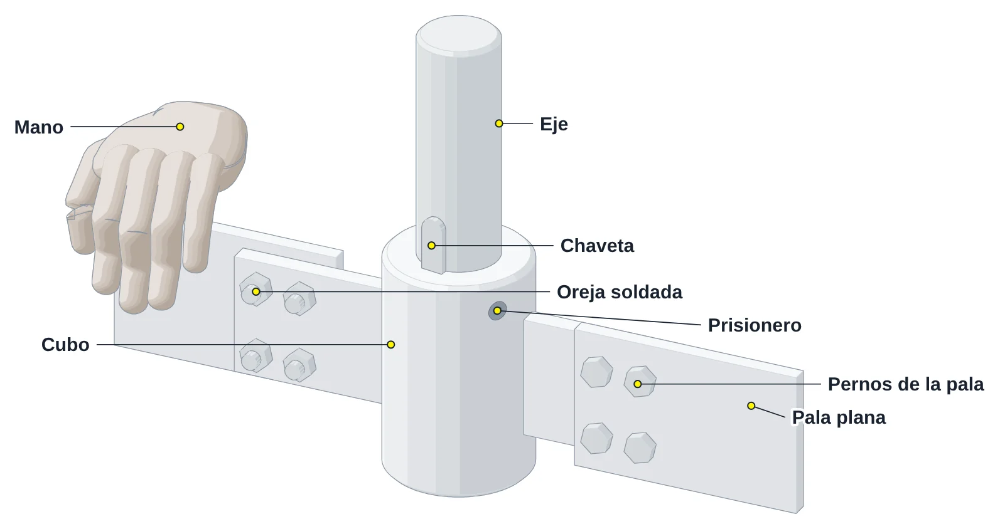
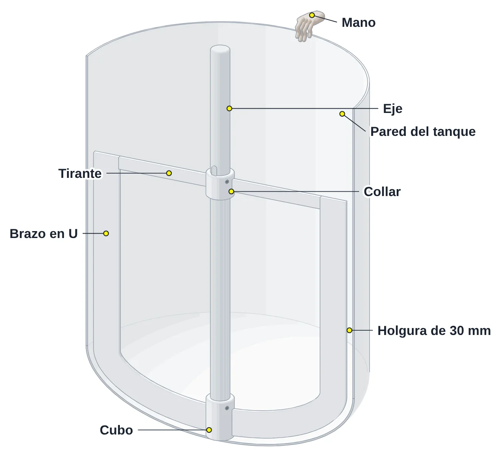
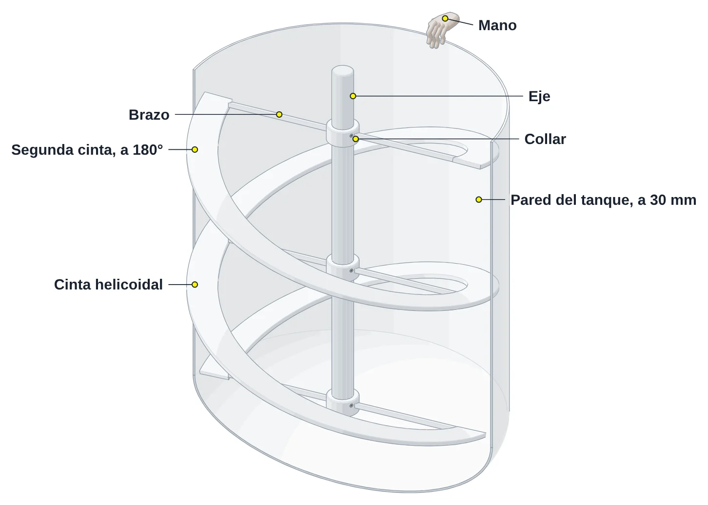

Proyecto de Operaciones Unitarias · Sesión 13
Agitación y mezclado
Cómo se arma un tanque agitado, qué impulsor se escoge, cuánta potencia toma, qué pide un sólido o una gota y con qué regla se escala un piloto.
El reactor de extracción

Es un tanque vidriado que mide 2,5 m de diámetro y lleva 3,0 m de líquido, 13,7 m³. En él se extrae la pectina de la cáscara de cítricos.
- El líquido es agua ácida a 85 °C (968,6 kg/m³ y 0,333 mPa·s) con un 10 % en peso de cáscara triturada de 2 mm y 950 kg/m³.
- Lo mueve una turbina de 0,83 m con cuatro palas inclinadas a 45°, que gira a 100 r/min a 0,625 m del fondo y bombea hacia abajo.
- Como es vidriado, sus dos bafles de aleta cuelgan de la tapa.
La cáscara es más liviana que el agua caliente y flota, igual que buena parte de la cáscara en el tanque de lavado de su planta.
El tanque
Las proporciones con que se midieron las correlaciones, los bafles y cuánta altura alcanza a mover un impulsor.
Las proporciones del tanque
Agitar es hacer que el líquido circule con un patrón dentro del tanque. Mezclar es distribuir al azar lo que antes estaba separado. Un tanque con solo agua se agita, aunque no tenga nada que mezclar.
Las correlaciones se midieron en tanques con la geometría normalizada: impulsor de diámetro colocado a del fondo, líquido hasta , cuatro bafles de y palas de . Es la referencia para usar los números tabulados. Un tanque distinto puede trabajar mejor, pero pierde la certeza de esos números.
El fondo abombado evita las esquinas donde las corrientes no llegan y los sólidos se acumulan.
Los bafles
El líquido gira entero
Aparece un vórtice que, si la velocidad es alta, chupa aire; los sólidos se amontonan en el centro del fondo y, al girar el líquido junto con las palas, el impulsor toma menos potencia: a Re = 10⁴, una Rushton sin bafles se queda con una quinta parte de la potencia que toma con ellos.
Flujo de arriba abajo
Cuatro placas junto a la pared bastan casi siempre: de para turbinas y de para hélices, separadas de la pared el 1,5 % de para que detrás no se acumule nada.
Líquidos muy viscosos
Por encima de 10 Pa·s ya no hacen falta, y en laminar, con Re menor que 10, los bafles no cambian la potencia.
El reactor del caso lleva dos aletas colgadas de la tapa, y ninguna fuente da la potencia con dos aletas. Sus cuentas usan los números de potencia de cuatro bafles de pared, los que se midieron y los que más potencia piden: para el motor, ese es el lado seguro.
La altura y el número de impulsores
| Tarea | Un impulsor | Dos impulsores |
|---|---|---|
| Mezclar líquidos | 1,4 | 2,1 |
| Suspender sólidos | 1,2 | 1,8 |
| Dispersar gas | 1,0 | 1,8 |
Hasta qué alcanza a mover cada número de impulsores, según la tarea.
La altura de líquido que mueve un impulsor depende de lo que tiene que hacer. Cuando no alcanza, se pone un segundo impulsor en el mismo eje.
- Los impulsores de un eje van separados más o menos un diámetro, para que no se estorben.
- Con bafles de , el de arriba, si es axial y bombea hacia abajo, debe quedar sumergido por lo menos ; con bafles angostos de , por lo menos .
- Con = 1,2, el reactor queda en el borde de lo que suspende un solo impulsor, y entre su turbina y la superficie hay 2,4 m de líquido.
Los impulsores
Axiales, radiales y de pared: cómo mueve cada uno el líquido y cuál conviene a cada tarea.
Los patrones de flujo
Los siete impulsores







- Una hélice fundida pesa mucho: rara vez pasa de 18 in, unos 0,46 m.
- La de palas inclinadas deja de ser axial con por encima de 0,55 o con un Reynolds bajo, y echa hacia la pared.
- El hidrofoil está en la mayoría de las instalaciones, pero no sirve con líquidos muy viscosos ni con gas.
- El disco de la Rushton obliga al gas que entra por debajo a pasar por las palas, y por eso es el impulsor clásico del gas.
- La paleta trabaja despacio, entre 20 y 150 r/min, y no suspende sólidos.
- El ancla trabaja entre unos 5 y 50 Pa·s; la cinta es la mejor por encima de unos 20.
La selección del impulsor
Dispersar gas o gotas depende de la cizalla y sale mejor con un impulsor pequeño y rápido. Para suspender o mezclar, que piden circulación, conviene uno grande que gire despacio, y si la tarea es solo suspender, un axial le gana a un radial.
Las fuentes dan límites de viscosidad que no coinciden, porque cada cifra se fijó en un tanque particular. Lo que manda es el Reynolds del impulsor: con Re entre 100 y 200 conviene pensar en un impulsor para laminar, y por debajo de 1000 la de palas inclinadas ya no bombea con eficiencia.
Al caso le sirve la de palas inclinadas: suspende y circula. Un hidrofoil daría el mismo caudal con menos potencia, y una Rushton gastaría 4,5 veces más sin que haya gas.
La potencia y el caudal
El número de potencia, el motor, el caudal que bombea un impulsor y el tamaño de los remolinos más pequeños.
El número de potencia
El análisis dimensional deja la potencia en función de dos números, con las proporciones del tanque fijas. El Reynolds del impulsor lleva en revoluciones por segundo:
Por debajo de Re = 10 el flujo es laminar, y por encima de 10⁴, turbulento. En los extremos:
En laminar la densidad no cuenta; en turbulento, la viscosidad no cuenta y es una constante de cada impulsor.
Las constantes de cada impulsor
| Impulsor | |||
|---|---|---|---|
| Hélice, paso igual al diámetro | 41 | 0,32 | 0,5 |
| Cuatro palas inclinadas a 45° | 44,5 | 1,27 | 0,75 a 0,87 |
| Hidrofoil HE‑3 | 43 | 0,28 | 0,47 |
| Rushton de seis palas | 65 | 5,75 | 0,72 a 1,3 |
| Paleta de dos palas | 36,5 | 1,70 | |
| Ancla | 300 | 0,35 |
Con cuatro bafles de 10 % de . es el valor en turbulento.
Un número de potencia tabulado es una idealización: cambia con la altura del impulsor, con el ancho de las palas y con lo que hay en el tanque. Para pasarlo a otra altura del impulsor se usa la razón:
Dos turbinas de palas planas separadas un diámetro toman unas 1,9 veces lo de una; con dos de palas inclinadas, las mediciones dan menos del doble.
La potencia del reactor
A 100 r/min, 1,667 r/s, en el agua a 85 °C, el Reynolds es de 3,34 × 10⁶, en la meseta del turbulento. Con = 1,27, la turbina le entrega al líquido 2,24 kW, 164 W/m³.
- La punta de las palas va a = 4,35 m/s, y el par en el eje es = 214 N·m.
- El 1,27 es para el impulsor a del fondo. Con la turbina a 0,625 m, como en el caso, el número sube a 1,36 y la potencia llega a 2,41 kW.
- El motor se escoge con el 1,36; el caudal y la cabeza, con el 1,27 de la tabla, porque con esa geometría se midieron los números de flujo.
La potencia por volumen y el motor
Una guía cualitativa
En líquidos poco viscosos, entre 0,1 y 0,2 kW/m³ es agitación moderada; entre 0,4 y 0,6, vigorosa, y entre 0,8 y 2, intensa. El caso, con 0,16, es moderado: solo tiene que circular. La cifra no dice cómo se reparte la potencia en el tanque.
La mayor potencia posible
Con el lote frío, a 20 °C, el agua pesa más y el impulsor pide 2,48 kW. En Bogotá un motor entrega el 89 % de lo que dice su placa, y el impulsor debe quedarse por debajo del 85 al 90 % de esa cifra. Con el 85 %, hacen falta por lo menos 3,3 kW.
El factor de servicio
El 1,15 del motor se queda de reserva para lo que el cálculo no previó; usarlo para escoger el motor lo gasta antes del arranque. El reductor sí lleva el suyo, 1,25. El reductor, los cojinetes y el motor se llevan además entre 30 y 40 % de la potencia del impulsor.
El motor gira a 1800 o 1200 r/min, y el reductor baja la velocidad a los 100 r/min de la turbina. Lo que entra por el eje acaba en calor, pero los 2,24 kW apenas suben 0,14 K por hora la temperatura del lote: frente a la camisa no cuentan.
El caudal que bombea
Un impulsor es una bomba sin carcasa: mueve muchísimo líquido con muy poca cabeza, y esa cabeza termina disipada como turbulencia en el tanque.
- El caso bombea entre 2570 y 2990 m³/h, así que todo el lote cruza la turbina cada 17 a 19 s, con una cabeza de 0,28 m.
- La bomba del capítulo 11 mueve 25 m³/h con 17 m. La turbina mueve unas 120 veces ese caudal, con una cabeza sesenta veces menor.
- Con la misma potencia, un impulsor más grande y más lento da más caudal y menos cabeza: crece con .
Los patrones y los remolinos más pequeños
La turbina del caso mueve el líquido en un solo lazo: hacia abajo junto al eje y hacia arriba junto a la pared. A las esquinas del fondo y a la superficie es a donde menos llega la energía.
La potencia se va pasando a remolinos más y más pequeños, y la viscosidad disipa los últimos. Su tamaño es la escala de Kolmogorov:
En el caso son 22 µm con la potencia media, 0,169 W/kg, y 10 µm cerca de la turbina. Lo que mide más de unos 1000 µm, como la cáscara de 2 mm, depende de la circulación; lo que mide menos de 100 µm responde a la potencia por volumen.
Sólidos y gotas
La suspensión de lo que se hunde, el arrastre de lo que flota y el tamaño de las gotas.
La suspensión completa
Un sólido que se hunde pasa por tres estados al subir la agitación: se mueve sobre el fondo, ninguna partícula se queda quieta en él más de uno o dos segundos (la suspensión completa) y, mucho después, queda casi pareja en todo el tanque.
cuenta los kilogramos de sólido por cada 100 de líquido, y depende del impulsor y de su posición. La diferencia de densidad tiene el exponente mayor; la carga y el tamaño pesan poco.
Pasada la suspensión completa, agitar más rinde poco: la nube de sólidos sube, y la transferencia casi no mejora.
Los sólidos que flotan
Lo que flota no hay que levantarlo del fondo: hay que meterlo desde arriba, con un vórtice controlado. Como pasa en la superficie, manda el Froude:
La cáscara seca pide Fr = 0,383, 128 r/min, y el reactor gira con 0,235: va al 78 %, y sus dos aletas le quitan vórtice. A 100 r/min no se asegura que la cáscara se moje.
Empapada, se hunde, y Zwietering pide apenas entre 16,5 y 40 r/min. Esa densidad no está publicada: hay que medirla.
El costo de hundir la cáscara
- Llevar la turbina a 128 r/min pide unos 4,7 kW con el lote caliente, dos veces la potencia actual, y un motor de 6,8 kW o más.
- Con una turbina de mayor diámetro, hundir la cáscara cuesta menos: con = 0,50 le bastan 49,3 r/min y 2,08 kW, aunque con esa turbina la correlación se usa lejos de donde se midió.
- Lo que flota también se hunde con una turbina cerca de la superficie, con la turbina bombeando hacia arriba o con menos bafles.
El caso agrega una segunda turbina igual, 0,83 m bajo la superficie, y un variador para encontrar en la planta la velocidad que hunde la cáscara. Con las dos turbinas, el motor no puede bajar de 6,6 kW.
El tamaño de las gotas
Una gota se rompe cuando la turbulencia vence la tensión interfacial, que tiende a dejarla redonda. Si la gota es poco viscosa y mayor que la escala de Kolmogorov:
Como el Weber va con , la gota va con : al doblar la velocidad queda en el 44 %, con ocho veces la potencia.
Para las gotas de ciclohexano del ejemplo del libro, tres correlaciones dan 121, 153 y 132 µm: sirven más para los cambios relativos que para el tamaño absoluto. En un sistema que coalesce, las gotas salen más grandes en el tanque grande, donde tienen más tiempo para juntarse lejos del impulsor.
Mezcla y escalado
El tiempo de mezcla, el piloto que funcionaba y las reglas con que se escala un tanque agitado.
El tiempo de mezcla
Grenville midió en tanques de hasta casi 3 m, con cuatro tipos de turbina, y todos cayeron sobre la misma correlación. En turbulento, con por encima de 6370:
- La viscosidad no aparece: el tanque queda mezclado tras un número fijo de vueltas del eje. En el caso, 28,6 s, y al 99 %, 44 s.
- La turbina baja y las dos aletas alargan el tiempo; el diseño toma 48 s y se comprueba en el arranque con sal y conductividad.
- Si el tanque y el impulsor no cambian, mezclar en la mitad del tiempo cuesta ocho veces la potencia.
El tiempo de mezcla y la viscosidad
El tiempo se queda en 28,6 s mientras la viscosidad no pase de unos 190 mPa·s. En la transición aumenta al mismo ritmo que la viscosidad, y pasados unos 6,6 Pa·s el flujo ya es laminar.
Con un extracto de 3 Pa·s, el Reynolds cae a 371 y el tiempo sube a 459 s; a 150 r/min baja a 204 s. Cuando mezclar pide más de 200 vueltas, toca un impulsor hecho para laminar.
Con la misma potencia por masa, dos impulsores del mismo diámetro tardan lo mismo en mezclar aunque uno bombee más. Uno más grande sí lo acorta: con los mismos 2,24 kW, una turbina de = 0,5 mezcla en 25 s.
El piloto y la planta
| Piloto | Planta | |
|---|---|---|
| Diámetro del tanque | 0,5 m | 2,5 m |
| Velocidad | 292 r/min | 100 r/min |
| Potencia | 17,9 W | 2,24 kW |
| Potencia por volumen | 164 W/m³ | 164 W/m³ |
| Tiempo de mezcla, | 9,8 s | 28,6 s |
| Velocidad sobre la que hunde la cáscara | 1,02 | 0,78 |
| Calentar de 20 a 85 °C | 27 min | 143 min |
Escalado con la misma potencia por volumen, con una turbina.
Antes de comprar el reactor se probó un piloto de 0,5 m con la misma forma. A 292 r/min hundía la cáscara, repartía el ácido en diez segundos y calentaba el lote en 27 minutos.
Para la planta se conservó la potencia por volumen, la regla más usada. Allá la cáscara se queda arriba, el ácido tarda casi medio minuto y la camisa, casi dos horas y media.
Las cuentas estaban bien. Cada una de esas cosas cambia distinto con la escala, y la regla escogida solo mantiene una de ellas.
Las reglas de escalado
Con semejanza geométrica, cada medida del tanque grande es la del chico por el mismo factor , incluido el espesor de las palas. Solo queda por decidir la velocidad:
El exponente dice qué se conserva, y lo que la regla no conserva es lo que engaña del piloto.
| Conserva | Sirve para | ||
|---|---|---|---|
| 0 | la velocidad | el mismo tiempo de mezcla | |
| 1/2 | el Froude | el vórtice y hundir lo que flota; el coeficiente de la camisa | |
| 2/3 | la potencia por volumen | dispersión de gas y de gotas | igual |
| 3/4 | sólidos de dificultad media | ||
| 0,85 | sólidos fáciles, con Zwietering | ||
| 1 | la velocidad de la punta | la cizalla máxima |
Con semejanza geométrica y Re por encima de 10⁴.
Cada regla en el reactor
Con = 5, la planta gira a r/min.
- Potencia por volumen, = 2/3: 100 r/min y 2,24 kW; la cáscara recibe el 78 % de la velocidad que pide.
- Froude, = 1/2: 131 r/min con 5,0 kW; la cáscara se comporta como en el piloto, y el ácido queda repartido a los 22 s.
- Tiempo de mezcla, = 0: 292 r/min y 56 kW, con la punta a 12,7 m/s.
- Punta, = 1: 58,5 r/min y 0,45 kW; la cáscara recibe el 46 %.
El arrastre desde la superficie se escala con el Froude. La cáscara decide el escalado del reactor, y el ácido no decide nada.
La tarea que limita
Una regla que sirve para un proceso no sirve para otro en el mismo equipo. Se busca la tarea que limita y se escala con su regla.
Si lo crítico es el tiempo de mezcla, se escala hacia abajo: el piloto gira a la velocidad que da el tiempo de la planta. En el caso serían 100 r/min: el piloto mezclaría como la planta, pero allí la cáscara se quedaría arriba aunque en la planta se hundiera. Ningún piloto copia al mismo tiempo la mezcla y el arrastre.
Conviene evitar pilotos de menos de unos 0,3 m y ensayar en dos escalas, para medir el exponente en lugar de suponerlo.
El tanque de lavado de su planta
Qué pide la Bitácora 2 y qué se mide en el Laboratorio 2.
Lo que pide su planta
El Laboratorio 2
El número de potencia
Su equipo mide el par de una Rushton o de una turbina de palas inclinadas en un vaso de 500 mL con las proporciones normalizadas, y compara su y su Reynolds con los del libro.
Las gotas
Toma muestras de una emulsión diluida de aceite mineral a cuatro velocidades, y con el diámetro de Sauter del Mastersizer prueba si las gotas siguen al Weber.
La regla de escalado
Con el exponente que mida, escoge la regla que conserva el tamaño de las gotas, y revisa con la escala de Kolmogorov si sus gotas caben en la correlación.
El prelaboratorio se presenta antes en Bloque Neón: sin él no se entra. El memorando se entrega el domingo 21 de marzo.
Lo que sigue
Laboratorio 2
Agitación y emulsión, todos los equipos a la vez.
Bitácora 2
El PFD, las bombas, las válvulas, el control y el tanque de lavado.
Taller 3
La hoja de datos de una bomba y de su válvula de control, en pareja.
Examen 1
Arrastre de vapor, bombas, válvulas, control y vacío.
Los capítulos 14 y 15 del libro traen, además de esta clase, los tanques que se mueven, recuadros para cambiar el impulsor y la velocidad, y retos con números que cambian.
IQYA-2031 · Sesión 13
Próxima sesión
Nos vemos el jueves 11 de marzo en el Laboratorio 2, agitación y emulsión.
Figuras: capítulos 14 y 15 del libro de operaciones unitarias del curso. Grabados, vía Wikimedia Commons: «Citrus, Citronier» y «Citrus aurantium», New York Public Library, dominio público; «Un boticario y un alambique primitivo» y «Rama de cítrico con dos frutos», Wellcome Collection, CC BY 4.0; «Citrus madurensis», Francisco Manuel Blanco, dominio público.